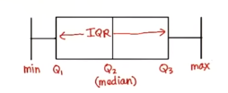

Statistics
Table of Contents
1 Type of research
- Observational Study
- Controlled Experiment
- Survey
2 Central tendency
2.1 mean
\[\mu = \frac{\sum_{i=1}^{n}x_i}{n}\] \[\mu = \frac{\sum_{i=1}^{n}freq_i \cdot x_i}{\sum_{i=1}^{n}freq_i}\] \[\mu = \sum_{i=1}^{n}p_i\cdot x_i\]
2.2 mode
2.3 median
- even \[\frac{x_\frac{n}{2} + x_{\frac{n}{2}+1}}{2}\]
- odd \[x_\frac{n+1}{2}\]
3 Variability
3.1 range
highest value - lowest value
3.2 quartile
| lower bound(lowest) | lower quartile(Q1) | median(Q2) | upper quartile(Q3) | upper bound(highest) |
3.2.1 IQR(Interquartile Range)
\[Q_3 - Q_1\] \(Q_1\) is the midean of the first half

3.2.2 Outlier
whiskers = 1.5 \[< Q_1 - whiskers\cdot(IQR)\] \[> Q_3 + whiskers\cdot(IQR)\]
3.3 deviation
3.3.1 Average Absolute Deviation
average absolute distances to the mean
- The value far away from mean isn't penalized
eg: set A: 4 4 6 8 8, set B: 2 6 6 6 10, average absolute deviations are the same.
- To penalize the outliers, use standard deviation instead of average absolute distance
3.3.2 MAD(median absolute deviation)
more robust than variance
3.3.3 Variance
\[\sigma^2 = \frac{\sum_{i=1}^n(x_i-\mu)^2}{n}\] \[\sigma^2 = \frac{\sum_{i=1}^n x_i^2}{n} - \mu^2\] \[\sigma^2 = \sum_{i=1}^n{p_i}(x_i-\mu)^2 = \sum_{i=1}^{n} p_i x_i^2 - \mu^2\]
3.3.4 Standard deviation
- standard deviation \(\sigma\)
3.3.5 Standardize(z-score)
\[z=\frac{X-\mu}{\sigma}\] Standardize to \(X\sim Norm(0, 1)\)
4 Sample
4.1 Term
| population mean | \(\mu\) |
| estimate of population mean | \(\hat\mu\) |
| population sd | \(\sigma\) |
| estimate of population sd | \(\hat\sigma\) |
| sample mean | \(\bar{x}\) |
| sample sd | \(s\) |
| sample size | \(n\) |
4.2 Sampling method
4.2.1 Simple Random Sampling
Simple random sampling is where you choose sampling units at random to form your sample.
4.2.2 Stratified Sampling
Stratified sampling is where you divide the population into groups of similar units or strata. Each stratum is as different from the others as possible.
- these groups are called strata
- each individual group is called stratum
4.2.3 Cluster Sampling
Cluster sampling is where you divide the population into clusters where each cluster is as similar to the others as possible.
4.2.4 Systematic Sampling
Systematic Sampling is where you choose a number, k, and sample every kth unit.
4.3 Sample Mean
\[\bar{x}=\sum_{i=1}^n x_i\]
- estimate of population mean
\[\hat\mu=\bar{x}\]
4.4 Variance
\[s_{real}^2 = \frac{\sum_{i=1}^n(x_i-\bar{x})^2}{n}\]
4.4.1 estimate of population variance
Because population distribution is steeper than sample distribution, use Bessel's Correction to get a better estimate of population \[\hat{\sigma}^2 = \frac{\sum_{i=1}^n(x_i-\bar{x})^2}{n-1}\]
- The population variance point estimator is usually written \(s\), so \(s=\hat{\sigma}\)
5 Sampling Distribution
- \(n\): sample size
- \(X_i\): the i th independent randomly chosen observation
- observation should follow the population distribution, so \(E(X_i)=\mu\) and \(Var(X_i)=\sigma^2\)
- \(\bar{X}\): Variable for sample mean \(\bar{X}=\frac{X_1+X_2+\dots+X_n}{n}\)
- distribution of sample means: the distribution of \(\bar{X}\)
- \(SD\): the standard error of the mean \(\sqrt{Var(\bar{X})}\)
5.1 \(E(\bar{X})\)
\[\begin{align*} E(\bar{X}) & =E(\frac{X_1+X_2+\dots+X_n}{n}) \\ & = \frac{1}{n}(E(X_1)+E(X_2)+\dots+E(X_n)) \\ & = \frac{1}{n}(n\mu) = \mu \end{align*}\]
5.2 \(Var(\bar{X})\)
\[\begin{align*} Var(\bar{X}) & =Var(\frac{X_1+X_2+\dots+X_n}{n}) \\ & = Var(\frac{1}{n}X_1+\frac{1}{n}X_2+\dots+\frac{1}{n}X_n) \\ & = (\frac{1}{n})^2(Var(X_1)+Var(X_2)+\dots+Var(X_n)) \\ & = \frac{1}{n}(n\sigma^2) = \frac{\sigma^2}{n} \end{align*}\]
- \(SD=\frac{\sigma}{\sqrt n}\)
5.3 Central limit theorem
Condition: \(n \ge 30\)
- The mean of the sample means \(\approx\mu\)
- The standard deviation of the sample means \(SD \approx\frac{\sigma}{\sqrt{n}}\) (standard error)
- The distribution of sample mean is approximately normal distribution \(\bar{X}\sim Norm(\mu, \frac{\sigma^2}{n})\)
6 Confidence Interval
Confidence Interval(CI) is a type of interval estimate of a population parameter that is computed from the observed data \[statistic\pm margin\ of\ error\] \[margin\ of\ error = c\times (standard\ deviation\ of\ statistic)\]
6.1 Steps to Find CI
- choose the population statistic
- find its sampling distribution
- choose level of confidence
- find the confidence limits
7 z-distribution
Sample size \[n \ge 30\]
7.1 z-score
\[z=\frac{\bar{X}-\mu}{\sigma/\sqrt{n}}\]
7.2 Estimate CI
\[(\hat{\mu}-zSD, \hat{\mu}+zSD)\]
- \(zSD\) is the margin of error
\[(\bar{x}-z\frac{s}{\sqrt{n}}, \bar{x}+z\frac{s}{\sqrt{n}})\]
- \(\pm{z}\) are the critical values of Y% confidence interval
- if we know what \(\sigma\) is, use \(\sigma\) in the formula
8 t-distribution
8.1 What is t-distribution
The problem with basing our estimate of \(\sigma\) on just a small sample is that it may not accurately reflect the true value of the population variance. This means we need to make some allowance for this in our confidence interval by making the interval wider.
8.2 When to use?
- population is normal
- \(\sigma^2\) is unknown
- sample size is small
8.3 Notation
\[T\sim t(v)\]
- \(v=n-1\): degree of freedom
8.4 t-score(same as z-score)
\[t=\frac{\bar{X}-\mu}{s/\sqrt{n}}\]
8.5 CI
\[(\bar{x}-t(v)\frac{s}{\sqrt{n}}, \bar{x}+t(v)\frac{s}{\sqrt{n}})\]
- check T-table with \(v\) and Y% confidence interval
9 Hypothesis testing
9.1 Steps
- Decide on the hypothesis (\(H_0\), \(H_A\)) you're going to test
- Choose your test statistic
- Determine the critical region for your decision(\(\alpha\) level)
- Find the p-value of the test statistic
- See whether the sample result is within the critical region
- Make your decision
9.2 null hypothesis \(H_0\)
9.2.1 Reject null hypothesis
- Sample mean falls within the critical region
- z/t-score of sample mean is greater than the z/t-critical value
- the probability of obtaining the sample mean is less than the \(\alpha\) level
9.2.2 type 1 error
Reject \(H_0\), but in the real world \(H_0\) is true. \(P(type\ 1 error)\) = α$
9.2.3 type 2 error
Retain \(H_0\), but in the real world \(H_0\) is false. \(P(type\ 2 error)\) = β$
- Find \(\beta\)
- Check that you have a specific value for \(H_A\)
- Find the range of values outside the critical region of your test
- Find the probability of getting this range ov values, assuming \(H_1\) is true
We can only calculate \(\beta\) if \(H_A\) specifies a single specific value
- Power
The power of a hypothesis test is the probability that we will reject \(H_0\) when \(H_0\) is false \[power = 1 - \beta\]
9.3 alternative hypothesis \(H_A\)
- assume \(H_0\) is \(\mu\approx\mu_0\)
- then \(H_A\) could be \(\mu\neq\mu_0\), \(\mu<\mu_0\), \(\mu>\mu_0\)
9.3.1 \(\mu\neq\mu_0\)
Use two-tailed test
9.3.2 \(\mu<\mu_0\) or \(\mu>\mu_0\)
Use one-tailed test
10 Regression & Correlation
10.1 Covariance
\[cov(x, y) = \sum((x-\bar{x})(y-\bar{y}))\]
10.2 Least Squares Regression
The idea is to minimize the sum of squared errors(SSE) \(\sum(y-\hat{y})^2\) where \(\hat y=a+b\hat x\) \[b=\frac{cov(x, y)}{\sum(x-\bar{x})}=\frac{\sum((x-\bar{x})(y-\bar{y}))}{\sum(x-\bar{x})}\] \[a=\bar{y}-b\bar{x}\]
10.2.1 minimize \(\sum(y-\hat{y})^2\)
\[E(m, b)=\sum_{i=1}^{n}(y_i-(mx_i+b))^2\] To caculate m and b, we need to find the derivatives of E(m, b) with respect to m and b and set them to 0
10.3 correlation coefficient
The correlation coefficient is a number between -1 and 1 that describes the scatter of data points away from the line of best fit. \[r=\frac{cov(x, y)}{s_x s_y}=\frac{\sum((x-\bar{x})(y-\bar{y}))}{s_x s_y}\] \[r=\frac{bs_x}{s_y}\]
- linear correlation
11 TODO T-Tests
Compare the difference between two means
11.1 SEM(standard error of mean)
uses sample sd \[SEM=\frac{s}{\sqrt{n}}\]
11.2 t-score(one sample)
\[t=\frac{\bar{x}-\mu_0}{SEM}=\frac{\bar{x}-\mu_0}{s/\sqrt{n}}\]
11.3 Cohen's d
standardized mean difference that measures the distance between means in standardized units. \[Cohen's\ d = \frac{\bar{x}-\mu_0}{s}\]
11.4 \(r_2\)
\(r_2\): coefficient of determination
\(r^2\) % of variation in one variable that is related to
('explained by') another variable.
\[r^2 = \frac{t^2}{t^2+DF}\]
11.5 Formula Wrapup
\[DF=n-1\] \[SEM=\frac{s}{\sqrt{n}}\] \[t=\frac{\bar{x}-\mu}{SEM}\] \[d=\frac{\bar{x}-\mu}{s}\]
\[margin\ of\ error = t_{criticl}\cdot{SEM}\] \[CI=\bar{x}\pm{margin\ of\ error}\] \[r^2=\frac{t^2}{t^2+df}\]
11.6 Terms
| DF | degree of freedom |
| SEM | standard error of mean |
11.7 Dependent 2 sample t-test
\[t=\frac{\bar{x}_D-\mu_D}{S_D/\sqrt{n}}\] \[CI=\bar{x}_D\pm t_{critical}\cdot\frac{S_D}{\sqrt{n}}\] \[cohen's\ d=\frac{\bar{x}_D}{S_D}\]
11.7.1 Within-Subject designs
- Two conditions
- Pre-test, post-test
- Growth over time(longitudinal study)
11.7.2 Effect size
difference measures: mean, standardized
cohen's d == standardized mean difference
11.7.3 Statistical significance
Statistical significance means:
- rejected the null
- results are not likely due to chance(sampling error)
11.7.4 Advantages
- Controls for individual differences
- Use fewer subject
- Cost-effective
- Less time-consuming
- Less expensive
11.7.5 Disadvantages
Carry-over effects
Second measurement can be affected by first treatment
- Order may influence results
11.8 Independent 2 sample t-test
11.8.1 Between-Subject designs
- Experimental
- Observational
11.8.2 DF
\[DF = n_1+n_2-2\]
11.8.3 SE
\[s=\sqrt{s_{1}^2+s_{2}^2}\]
Assumes samples are approximately the same size, then \[SE=\sqrt{\frac{s_{1}^2}{n_1} + \frac{s_{2}^2}{n_2}}\]
11.8.4 Corrected Standard Error
\[SS=\sum_{i=1}^{n}(x_i-\bar{x})^2\] \[S_{p}^2=\frac{SS_1 + SS_2}{df_1 + df_2}\] \[SE=\sqrt{\frac{S_{p}^2}{n_1} + \frac{S_{p}^2}{n_2}}\]
cohen's d also uses \(S_p\)
\[d=\frac{\bar{x}-\mu}{S_p}\]
11.8.5 t statistic
\[t=\frac{\bar{x}_D-\mu_D}{SE}\]
12 ANOVA
Analysis of variance
12.1 Grand mean \(\bar{x}_G\)
mean of all values
12.2 F-Ratio
Between-group variability
The greater the distance between sample means, the more likely population means will differ significantly.
Within-group variability
The greater the variability of each individual sample, the less likely population means will differ significantly.
\[F=\frac{MS_{between}}{MS_{within}}=\frac{SS_{between}/df_{between}}{SS_{within}/df_{within}} =\frac{\sum_{i}n_i(\bar{x}_i-\bar{x}_G)^2/(k-1)}{\sum_i\sum_j(x_{ij}-\bar{x}_i)^2/(N-k)}\] \[SS_{total}=SS_{between}+SS_{within}=\sum_i\sum_j(x_{ij}-\bar{x}_G)\] \[df_{total}=df_{between}+df_{within}=N-1\]
12.3 Multiple Comparison Tests
We use multiple comparison tests if we want to know which two samples are differ after we've done ANOVA.
12.3.1 Tukey's Honestly Significant Difference(HSD)
\[Tukey's HSD = q^*\sqrt{\frac{MS_{within}}{n}} = q^*\frac{S_p}{n}\] q is the Studentized Range Statistic
12.4 Cohen's d
\[Cohen's\ d = \frac{\bar{x}_a-\bar{x}_b}{MS_{within}}\]
12.5 Explained Variation \(\eta^2\)
Proportion of total variation that is due to between-group differences. \[\eta^2=\frac{SS_{between}}{SS_{total}}\]
12.6 ANOVA assumptions
- Normality
- Homogeneity of variance
- Independence of observations
13 Report
13.1 Meaningfulness of Results
- What was measured?
- Effect size
- Can we rule out random chance?
- Can we rule out alternative explanations?(lurking variables)
13.2 descriptive statistics(Mean,SD,…)
report styles: text, graphs, tables
13.3 inferential statistics(\(\alpha\))
13.3.1 factors
- kind of test
- test statistic
- DF
- p-value
- direction of test(one/two tails)
13.3.2 inferential statistics
- confidence intervals
- confidence level e.g. 95%
- lower limit
- upper limit
- CI on what?
13.3.3 effect size measures
d, \(r^2\)
13.3.4 APA style
APA style is a whole guide on writing researh papers. \[t(df)=xxx, p=xx, direction\] example: \[t(24)=-2.5, p=0.01, one-tailed\]
- CI
example: Confidence interval on the mean difference;95%CI=(4,6)
13.4 visualization
13.4.1 Pie charts
Pie charts work by splitting your data into distinct groups or categories. Pie charts are less useful if all the slices have similar sizes, use bar charts for this case.
13.4.2 Bar charts
Bar charts allow you to compare relative sizes, but the advantage of using a bar chart is that they allow for a greater degree of precision.
- vertical or horizontal
Vertical bar charts tend to be more common, but horizontal bar charts are useful if the names of your categories are long.
13.4.3 Histogram
Histograms are like bar charts but with two key differences.
- The area of each bar is proportional to the frequency
- There are no gaps between the bars on the chart
13.4.4 Line charts
Line charts are better at showing a trend.